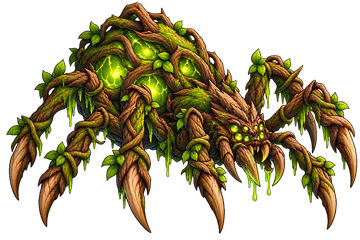
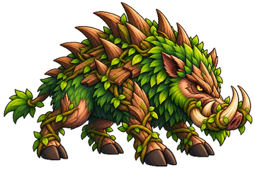
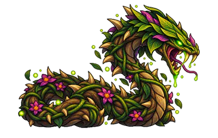

Elemental Knights › Elementos › Natureza
Elemento
Natureza
Evolução constante, adaptação e persistência — vence por desgaste contínuo, não por explosões de dano.
Estratégia
Como jogar com a Natureza
A Natureza vence por desgaste. Espalhe Envenenamento com Crescimento Vegetativo e Raízes Aprisionadoras, e fique de pé com cura: Fotossíntese recupera Vida para cada inimigo Envenenado, e Centro de Cura devolve 35% da Vida em 7 segundos.
O Florescimento cresce 16% para cada Intensidade de Envenenamento do alvo. A Ultimate, Floresta Viva, envenena todos os inimigos de uma vez e deixa todo Envenenamento garantido por 10 segundos.

Contra TerraSuas Habilidades causam +50% de dano.

Contra GeloSuas Habilidades causam −50% de dano.
Na Estratégia Elemental você escolhe 2 Passivas e 3 Ativas da Natureza, e a Ultimate ocupa um dos 3 lugares de Ativa. Lutar com a Natureza aumenta a sua Maestria nela.
Efeito especial
Envenenamento
Envenenamento Intensidade I a V
Dano contínuo. Com mais Intensidade, reduz a Precisão do alvo e devolve parte do dano como Vida para quem envenenou.
Sempre ativas
As 6 Passivas
Funcionam sozinhas durante a batalha. Você leva 2 delas.
-
Mata Densa
- Inimigo Envenenado recebe 1 efeito aleatório enquanto o Envenenamento durar:
- +1 Intensidade de Envenenamento · -5% de Velocidade · ou o Envenenamento dele cura você em 10% do seu Ataque a cada dano
-
Pólen Venenoso
- Reaplicar Envenenamento em quem já está Envenenado aumenta 1 Intensidade
- Se ele já estiver no máximo: a Barra de Ação dele para por 2 s
-
Mar de Folhas
- +15% de Ataque
- Seu próximo ataque que puder envenenar tem 40% de chance (em vez de 10%)
- A chance extra volta no seu próximo turno
-
Toxina
- Ao aplicar Envenenamento: 40% de chance de aplicar 2 Intensidades de uma vez (máx. 5)
-
Fotossíntese
- A cada 3 s: recupera 2% da Vida Máxima para cada inimigo Envenenado (máx. 3 inimigos = 6%)
-
Esporos
- Quando um inimigo morre Envenenado, o inimigo vivo mais próximo recebe Envenenamento (Intensidade 1)
- Não acontece se todos os outros já estiverem Envenenados
Você decide a hora
As 8 Ativas
Entram na Fila de Habilidades e são usadas quando a Barra ATB enche. Você leva 3, incluindo a Ultimate.
-
Floresta Viva Ultimate
- Aplica 2 Intensidades de Envenenamento em todos os inimigos
- Por 10 s: +15% de Ataque, +15% de Defesa e todo Envenenamento que você aplicar é garantido
Recarga: 20 s
-
Mar de Musgo Controle
- Causa 40% do Ataque em 1 inimigo
- O alvo fica com -15% de Velocidade e -20% de Precisão por 5 s
Recarga: 8 s
-
Crescimento Vegetativo Propagação
- Causa 180% do Ataque em 1 inimigo
- Envenena (Intensidade 1) um inimigo aleatório que ainda não esteja Envenenado
- Se todos já estiverem: +1 Intensidade no alvo principal
Recarga: 11 s
-
Centro de Cura Sustentação
- Por 7 s: recupera 5% da Vida Máxima por segundo (35% no total)
Recarga: 12 s
-
Carvalho Imponente Defesa
- Cria uma barreira com 50% da sua Vida Máxima por 10 s
- Recupera em Vida 30% de todo dano que a barreira absorver
Recarga: 18 s
-
Raízes Aprisionadoras Controle em Área
- Causa 120% do Ataque em todos os inimigos e reduz a Velocidade deles em 20% por 4 s
- Inimigos já Envenenados ganham +1 Intensidade
Recarga: 15 s
-
Florescimento Finalizador
- Causa 190% do Ataque em 1 inimigo, +16% para cada Intensidade de Envenenamento dele
- Se o alvo estiver com Envenenamento 5: você recupera 15% da Vida Máxima
- O Envenenamento não é consumido
Recarga: 20 s
-
Sementes da Vida Suporte
- Por 8 s: a cura do seu Envenenamento (Absorção Vital) aumenta 70%
Recarga: 12 s


Bestiário
Monstros da Natureza
Para enfrentá-los, entre com o Gelo. Os 11 monstros da Natureza em Entherya, do mais forte ao mais fraco:

Ent Ancestral
Tier 7 · Chefe da etapa 4-5

Aranha das Raízes
Tier 6 · Chefe da etapa 2-2

Javali de Espinhos
Tier 6 · Chefe da etapa 4-1

Serpente de Espinhos Tóxicos
Tier 5 · Chefe da etapa 1-5
- Ent Ancestral T7 · Chefe 4-5
- Guardião Sombrio T7
- Aranha das Raízes T6 · Chefe 2-2
- Javali de Espinhos T6 · Chefe 4-1
- Elemental de Natureza T5
- Serpente de Espinhos Tóxicos T5 · Chefe 1-5
- Unicórnio da Floresta T5
- Árvore de Outono T4
- Cogumelo Venenoso T3
- Slime Médio T2
- Slime Pequeno T1
Perguntas frequentes
Natureza: dúvidas comuns
Qual Elemento vence a Natureza em Elemental Knights?
O Gelo vence a Natureza: as habilidades do Gelo causam +50% de dano contra ela. Já as habilidades da Natureza causam −50% contra o Gelo.
Contra qual Elemento a Natureza é forte?
A Natureza vence a Terra: suas habilidades causam +50% de dano contra inimigos da Terra.
O que faz a Envenenamento?
A Envenenamento é o efeito da Natureza, com Intensidade de I a V. Dano contínuo. Com mais Intensidade, reduz a Precisão do alvo e devolve parte do dano como Vida para quem envenenou.
Qual é a Ultimate da Natureza?
Floresta Viva: Aplica 2 Intensidades de Envenenamento em todos os inimigos; Por 10 s: +15% de Ataque, +15% de Defesa e todo Envenenamento que você aplicar é garantido; Recarga: 20 s.
Em quais mapas a Natureza fica mais forte?
Arredores do Reino, Floresta Densa: nesses terrenos a Natureza causa +10% de dano e tem +2% de chance de aplicar Envenenamento.
Quais Chefes são da Natureza?
No Modo História: Serpente de Espinhos Tóxicos (etapa 1-5), Aranha das Raízes (etapa 2-2), Javali de Espinhos (etapa 4-1), Ent Ancestral (etapa 4-5).
Os seis Elementos
Conheça os outros


Escolha o seu Elemento
Elemental Knights é um RPG de estratégia para Android, grátis, em pixel art. As novidades e os convites para testar o jogo saem primeiro no Instagram.